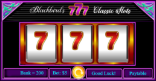
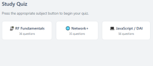

"Linked below are a few JavaScript projects representing my current capabilities as a developer. These were built collaboratively with Claude AI - AI-assisted development is rapidly becoming standard practice, and I believe working effectively alongside these tools is itself a valuable skill. I am proud of what I have built and present them here as an honest example of my work."
Moose Creek
This section contains a small collection of games that may ultimately be published as a standalone app. The core idea behind the Moose Creek collection is simple - to produce truly free games that don't constantly prompt the player for real money, as so many apps do today.
There is also a programming philosophy behind it. Game development is arguably the most encompassing form of software development - a game must accept multiple inputs, track player progress, maintain state and data, and do all of it while responding in real time. It is, in short, an excellent way to learn.
WIP: A simple classic Blackjack game. Splits still need to be worked out, but it otherwise functions well.

A simple old school 3 reel slot machine, with classic 7, and fruit Icons. If the player busts just refresh the page, and the bank and try again.
A simple, but rather effective quiz application for self study and review. Currently RF Fundementals, Networking, and JavaScript are covered, but it will most definately be expanded in size and scope over time.